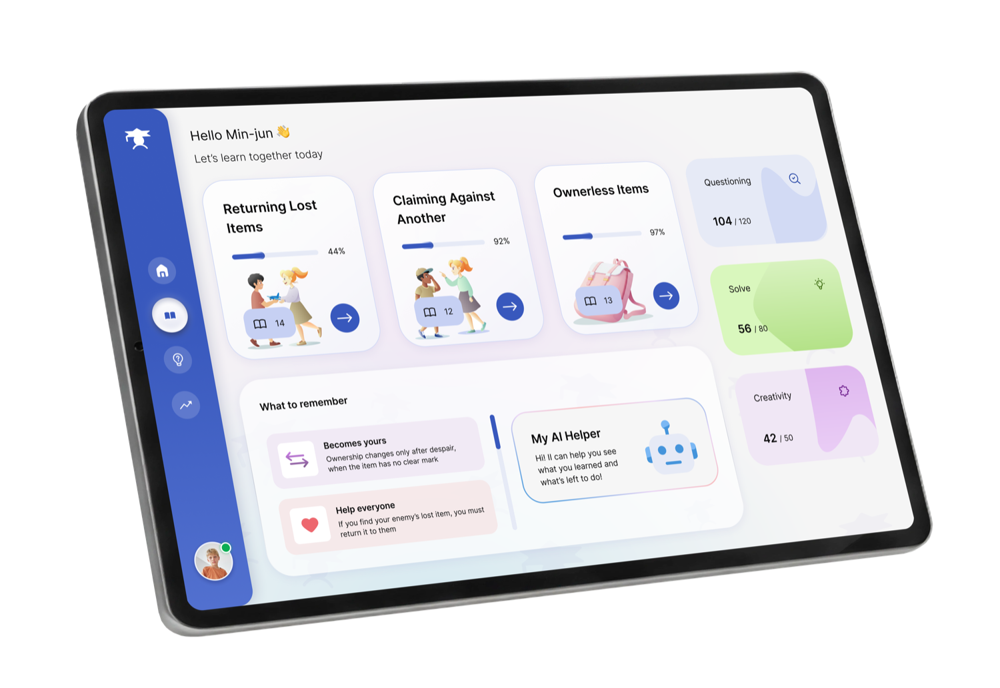
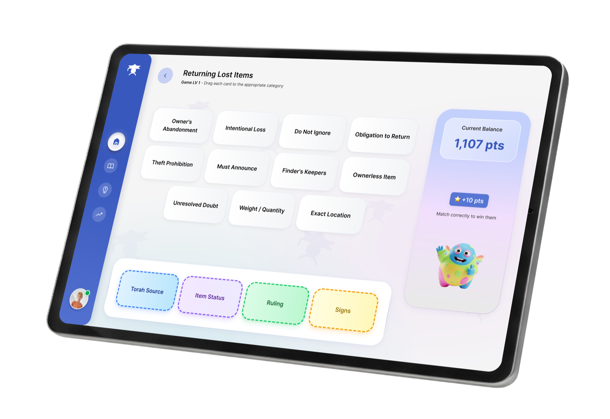
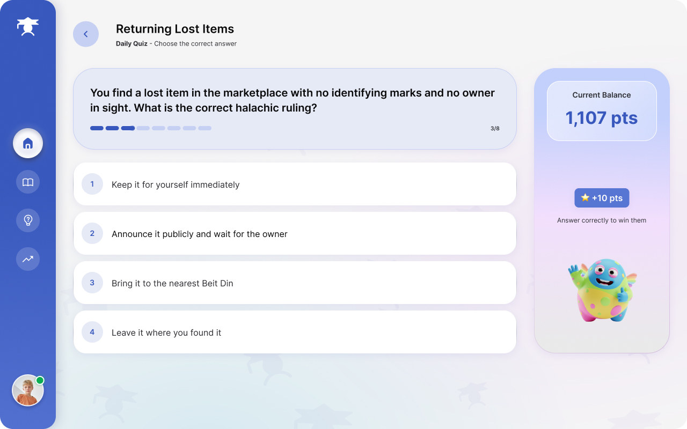
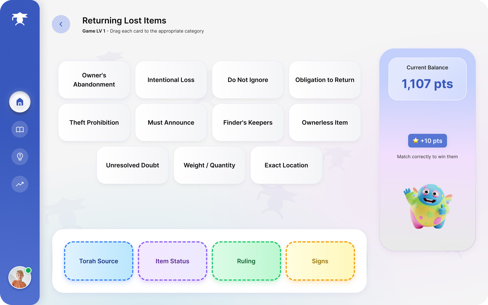
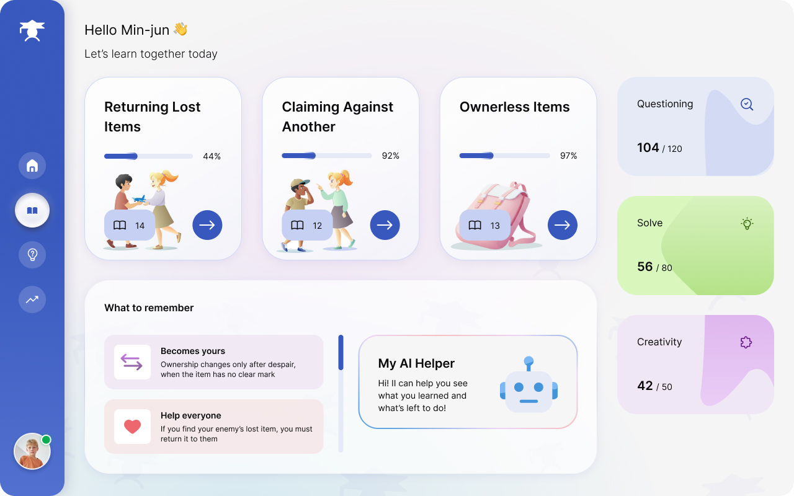

Talmind: bringing authentic Talmud study to Korean classrooms
The Koreans believe that studying the Talmud is the main reason for the success and wisdom of the Jews, pointing to the fact that they account for 25% of Nobel Prize winners, despite making up only 0.2% of the world's population.
Source: The Times of Israel
Overview
Talmind is a tablet app designed to bring authentic Talmud study to elementary, middle, and high school classrooms in Korea to help them acquire and adopt a Jewish mindset.


This is what I discovered after a friend sparked my curiosity
- 1
In Korea, a country of about 50 million people, almost every household owns a "book called the Talmud." The Ministry of Education has even recommended including Talmudic stories in children's studies to develop thinking and intellectual skills.Source
- 2
In most families, the book called the "Korean Gemara" is a 40-page collection of Talmudic stories, based on the work of Rabbi Marvin Tokayer from the 1970s, similar to moral tales of the sages or Stories of the Sages.Source
- 3
The paired-study method called "Havruta" is very common among them! There are private educational institutions known as "Chavruta Academies." The academies were founded by Dr. Park Ki-Ryong from KHU University, in collaboration with associations for Jewish leadership and innovative education.Source
Problem
Today, because of a cultural limitation, they mostly study the stories and legends of the Sages in pairs - so how do I make the authentic material accessible to them and make sure they learn it the right way? Gaps in knowledge and a limited cultural context lead to an approach that ignores core principles, making it hard to learn the material effectively. Additionally, social norms make students hesitant to ask questions in front of their peers, so they miss out on deeper learning.
Solution
I mapped the learning process and the achievements the South Korean audience would want to acquire, and designed an experience that connects to authentic Talmudic topics using a simple three-step learning path: first, getting a clear grip on the dry facts through a video, then learning in pairs, and then learning with an interactive AI havruta partner. I defined three core skills associated with the Talmud that I want them to acquire: the ability to ask questions, finding answers, and creativity.
To ensure fit and profitability, I have currently focused the product on the student side and it will serve as a classroom pilot allowing teachers to track real-world progress and validate the value of the product before scaling up.
Age:
Middle school.
I defined the required equipment
Every student has a tablet and headphones with a microphone
The structure of the curriculum - includes 3 stages:
- 1
Introductory video (2 - 5 minutes).
- 2
Havruta study in pairs, each student reads a sentence and explains it to their havruta (10 - 20 minutes).
- 3
Personal havruta study with an AI assistant + headphones with a microphone for every student (10 - 15 minutes).
About 30 - 45 minutes in total.

Adapting the learning materials
After a pure translation of the Talmudic text, I mapped and characterized the structure of a Talmudic sugya and defined it by dividing it into clear cases, with each part getting its own characteristic colour that stays the same in every sugya. In addition, I trained an AI model that knows how to replicate this work process on any future sugya we want to add to the system.

The Koreans believe in results - how does the system measure skill development?
In the AI havruta stage, the artificial intelligence assistant will serve as an almost-human havruta (similar to a voice conversation format with ChatGPT), which is trained very, very well on the sugya, while behind the scenes it gathers data such as how many good questions the student asked, how many good answers they gave, how much creativity they showed. The artificial intelligence assistant will also be trained to encourage the student to ask questions and to develop the rest of the skills.
These data are reflected immediately on the student's board at this stage, and at the same time are also passed on to the teacher's screen, which receives an accurate picture of a student and the pace of their progress in developing these skills.
How the system looks:

Impact
I am excited to share that thanks to hard fieldwork and efforts to reach the
relevant people, I succeeded, and the product reached influential figures in South Korea, sparking enormous
curiosity among leading educators.
The product will soon launch as an official pilot for middle
school.
This initial phase will feature the student interface alongside a data collection and analytics
dashboard for teachers.
Success means 80%+ of the class achieves the engagement metrics set in one lesson: 7 good questions, 3 accurate answers, and 1 creative solution.
To ensure this, Talmind's AI agent, trained in Talmudic subjects, handles rapid assessment behind the scenes, instantly determining which ones meet standards of quality, accuracy, and creativity.
The next challenge - how I adapt everything for elementary school as well
The proposed solution:
I decided to split it up and implement two different stages that include a level-adapted game and a fun quiz, and to postpone the havruta stages, in pairs / with an AI assistant, to the next lesson, after the three stages are completed.

Sketch
Before a single pixel: The flow of the three steps of lesson preparation, the daily quiz, and the drag-and-match game, which were initially developed manually.

Home screen
I used status icons to help students quickly understand which steps are completed and
which step they're currently on.
I also added a progress bar within each step and locked the next one to
keep students focused and create motivation and curiosity.

Quiz
Includes 8 questions about the material taught in the video.
To increase
engagement, I added a points system and immersive character animation to create a more rewarding and
enjoyable experience.

Game
To reduce development costs for a game targeting elementary school students, as a first step
I chose a simple drag-and-drop mechanic. This allowed me to easily scale the difficulty based on the
complexity of the concepts.
And to be honest, I was also inspired by the Duolingo app on how to teach in
a fun way.

Lessons
The lessons are organized by topic, while an artificial intelligence assistant clearly highlights what remains to be completed, so the student can stay focused.
Based on two key components of Talmudic intellect, I combined these elements to incentivize three core skills that support students throughout their lessons and quizzes.

Home screen - first version
I initially considered allowing direct lesson access from the homepage, but decided to lock it until preparation is complete to ensure all students start the lesson equally prepared.


None of these screens were designed one at a time
Every screen above is built on a full design system I made for the product: colour primitives and semantic tokens as Figma Variables, one type scale, and primitive components that compose into all of it. Change a primitive once and it updates everywhere it appears.
Colors

Typography

Takeaways
Through this experience, I learned that any challenge can be transformed into a successful reality by deeply understanding user pain points and breaking them down into actionable stages. The most rewarding part was succeeding in reaching the right people and finding wonderful ways to bridge cultural gaps, while leveraging advanced AI capabilities.